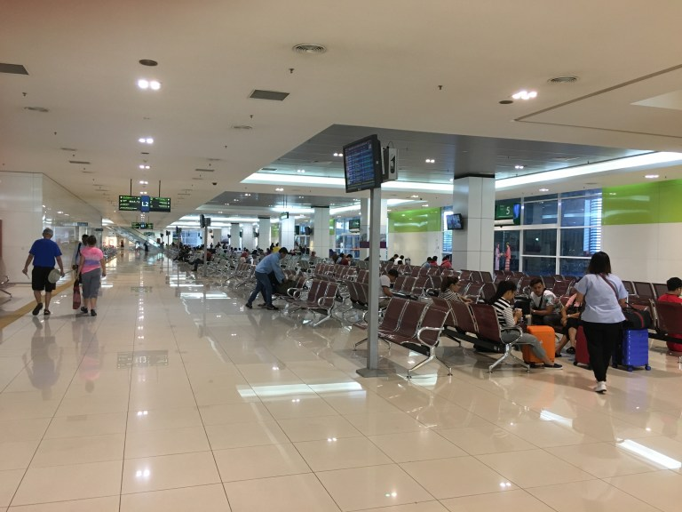
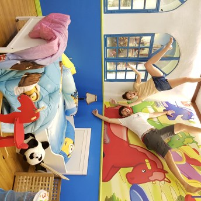
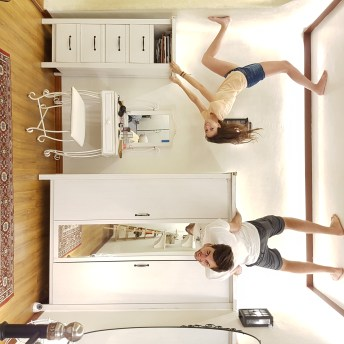
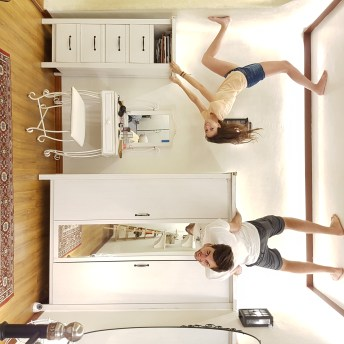

La partenza
Nonostante Ipoh sia una piccola città nel mezzo della Malesia, il sistema di trasporti che ci ha permesso di raggiungere l’isola di Penang funziona perfettamente. La grande stazione dei bus ad Ipoh ci ha infatti ricordato un aeroporto: tanti sportelli che vendevano biglietti per le più diverse destinazioni, panchine per aspettare il proprio bus, avvisi a tutto volume che annunciavano le diverse partenze e un’infinità di chioschetti dove rifornirsi di cibo e bibite.
Stavamo tranquillamente aspettando davanti al nostro gate quando fortunatamente abbiamo sentito un annuncio simile a questo:
Ding Dong!! Passengers DEMARCI and DON CALO are required to approach gate number six for departure…
Proprio così! Stavamo per perdere il nostro bus per Penang!! Non avevamo capito che nonostante il display del gate indicava di aspettare, il bus era gia pieno di gente e pronto per partire!
Hot Air Balloon festival
Uno dei motivi per cui ci siamo recati sull’isola di Penang è legato al fatto che non siamo riusciti a visitare il Laos. Dico così perchè quando ancor prima di partire per il viaggio abbiamo iniziato ad interessarci alle diverse attività che avremmo potuto svolgere nei diversi paesi che avremmo visitato, ci siamo subito prefissati di fare un giro in mongolfiera una volta giunti in Laos. Purtroppo per diverse ragioni durante il nostro viaggio abbiamo dovuto escludere il Laos dal nostro itinerario, e l’idea di poter fare un bel giro in mongolfiera si è sbriciolata. È stata una grande sorpresa quando abbiamo invece scoperto che a sull’isola di Penang, proprio nei giorni in cui saremmo stati in Malesia, si sarebbe svolto il festival internazionale delle mongolfiere!
Un enorme prato che si sarebbe popolato di una dozzina di mongolfiere, tante bancarelle-street food sui lati e musica! Sempre più mongolfiere facevano la loro comparsa sul pratone, finché verso l’ora del tramonto tutte insieme si illuminavano a ritmo di musica!
Dopo aver combattuto per riuscire a procuraci un biglietto per salire su una mongolfiera ed essere quasi arrivati in cima alla fila, la pioggia ha fatto la sua comparsa: tutte le mongolfiere sono state immediatamente sgonfiate e la manifestazione sembrava svolgere a termine. Eravamo così vicini a salire sulla mongolfiera (eravamo letteralmente in testa alla fila) che quasi non ci sembrava vero.. “Abbiamo attraversato mezz’Asia per salire sulla mongolfiera ed ora che siamo qui, per qualche goccia non ci fate salire?!”
Fortunatamente il maltempo era solo di passaggio, e così, dopo qualche ora siamo comunque riusciti a salire su una delle tante mongolfiere per dare un’occhiata dall’alto alla manifestazione.
Tutte queste mongolfiere messe insieme, la musica dal vivo e i fuochi d’artificio ci hanno lasciati con la bocca aperta: uno spettacolo fantastico!
George Town
George Town è la più grande città dell’isola di Penang, e come tale offre ai visitatori una vasta gamma di punti d’interesse e attività. Durante le prime ore del pomeriggio il sole era davvero forte e le temperarture salivano fino ai 34°! Un pomeriggio, per scappare da queste condizioni quasi estreme, abbiamo fatto visita all’ “Upside Down museum“.
 

Da qualche anno a questa parte, alcune zone della città si sono popolate di murales e graffiti. A noi è piaciuta particolarmente Armenian Street: un insieme di negozietti, bancarelle, creazioni artistiche e concertini a bordo della strada.

Con il sole cocente ci siamo pure fatti preparare un sorbetto letteralmente esplosivo!
Una banda di malesiani senior raccoglieva offerte a scopo di beneficienza e ci ha lasciati con un sorriso sul volto per il resto del pomeriggio!
Beh che dire, le diverse zone della città offrivano molto da vedere e di cui rimanere affascinati! Anche Little India nel primo pomeriggio si riempiva di gente, spettacoli e bancarelle tanto da rendere difficile il suo attraversamento!
Tra le strade di Little India ci siamo pure imbattuti in un photo shooting pre-matrimoniale di tre coppie di sposi che posavano davanti alle fotocamere vestiti con abiti tradizionali malesiani.

Kek Lok Si Temple
Nonostante il capodanno cinese fosse passato da qualche settimana, qui a Penang si respirava ancora aria di festa! Il templio di Kek Lok Si (uno dei templi buddhisti più grandi di tutta la malesia) era infatti ancora “addobbato” per i festeggiamenti del capodanno. Dico addobbato perché le decorazioni che sono state montate attorno e sul complesso religioso ricordavano molto le lucine che normalmente siamo abituati a vedere sugli alberi di Natale: più di 20’000 lanterne cinesi ricoprono l’intera costruzione per tutto il periodo del capodanno cinese rendendolo un posto quasi surreale!
Moltissimi turisti e locali visitano il templio in questo periodo proprio per ammirare la struttura illuminata dalle lanterne. Noi, fortunatamente, muovendoci in scooter siamo riusciti a superare la colonna di auto che probabilmente sarebbe durata ore per raggiungere il templio! Una volta in cima le migliaia di luci e lanterne accuratamente disposte attorno al templio ci hanno lasciati a bocca aperta! Chiaramente il numero di lanterne era esagerato: ogni superficie del templio era coperto da una lanterna creando un senso di chitch in tutta la zona.
La nostra permanenza a Penang è stata molto piacevole, sia per le diverse esperienze e posti visti, che per l’ambiente che abbiamo trovato lungo le vie della città di George Town! La nostra tappa inizialmente selezionata appositamente per poter partecipare alla manifestazione delle mongolfiere si è rivelata essere molto più bella di quanto immaginato!
Comment Section